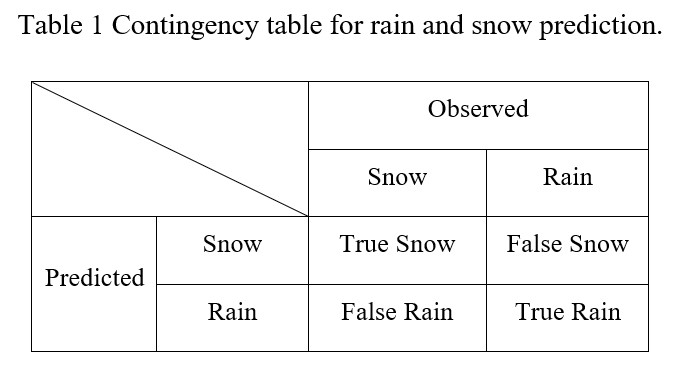
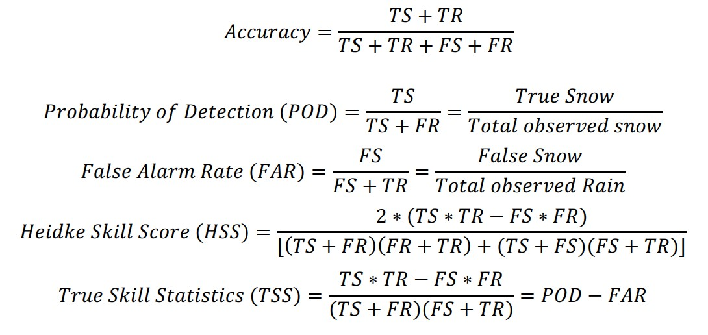

Data#
Data sets#
Region: 25N to 85N, 170W to 50W
Surface: NCEP ADP Global Surface Observational Weather Data,
ds464.0 1978.1-2007.2
ds461.0 2007.2-2019.12
more than 100 stations
Sounding: Integrated Global Radiosonde Archive (IGRA)
Collocate with NCEP ADP stations
For each station, find the nearest sounding within 0.5(lat)*0.5(lon)
more than 330, 000 soundings are collocated.
Satellite application: CloudSat CPR+ERA5
Precipitation Phase Observation#
Use present weather code reported by human observers as ground truth:
Snow: 70-79, 85 and 86;
Rain: 60-99 including freezing rain, mixed excluding snow
Training and Evaluation Data Size#
Type 1 soundings:
training: 42, 000+
evaluation: 9.7k+
Type 2 soundings:
training: 2050
evaluation: 600
Evaluation Metrics#


Accuracy measures the prediction skill of both rain and snow. POD is the percent of snow events that are correctly forecasted. FAR, also known as Probability of False Detection, shows the probability of a false recognition (rain recognized as snow in our case) when snow is not present. The HSS score takes into account the number of correct random forecasts. It falls within a (-1, +1) range. No incorrect forecasts give a score of +1, no correct forecasts give a score of -1, and either no events forecasted or no events observed give a score of 0. TSS is similar to the HSS, but incorporates random correct forecasts that are constrained to be unbiased. Perfect forecasts yield a score of +1, purely random forecasts receive 0, and forecasts worse than random attain negative scores. For rare event forecasts, TSS approaches POD. Unlike the HSS score which depends on the percentage of snow events in data set, this TSS score can be compared across different datasets.